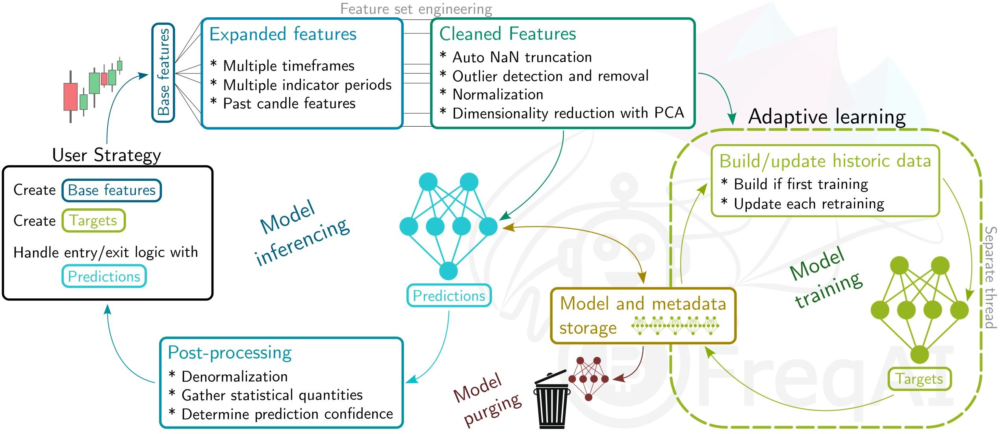

FreqAI¶
简介¶
FreqAI是一款旨在自动化多种任务的软件，涉及在给定一组输入信号的情况下训练预测性机器学习模型以生成市场预测。总体而言，FreqAI的目标是成为一个沙箱环境，方便在实时数据上快速部署强大的机器学习库（详情）。
注意
FreqAI是一个始终非营利、开源的项目。FreqAI 没有加密币代币，FreqAI 不出售交易信号，FreqAI也没有除目前Freqtrade文档之外的域名。
主要功能包括：
- 自适应再训练 - 在实时部署过程中对模型进行再训练，以监督方式实现市场的自我适应
- 快速特征工程 - 通过简单的用户自定义策略，创建大量丰富的特征集（超过一万项特征）
- 高性能 - 采线程技术在模型推断（预测）和机器人交易操作之外的独立线程（或GPU，如果可用）上进行模型的自适应再训练。最新的模型和数据存储在RAM中，以实现快速推断
- 逼真的回测 - 利用回测模块模拟基于历史数据的自适应训练，同时自动化进行再训练
- 扩展性强 - 由于架构通用且稳健，允许集成任何机器学习库/方法，目前提供八个示例，包括分类器、回归器和卷积神经网络
- 智能异常值剔除 - 使用多种异常值检测技术，剔除训练和预测数据中的异常值
- 崩溃恢复 - 将训练好的模型存储到磁盘，快速便捷地从崩溃中重载，同时清理陈旧文件，保证持续的模拟或实盘运行
- 自动数据归一化 - 以智能且统计安全的方式进行数据归一化
- 自动数据下载 - 计算数据下载的时间范围，更新历史数据（在实盘部署时）
- 输入数据清洗 - 在训练和模型推断前，安全处理NaN值
- 降维处理 - 通过主成分分析减小训练数据规模
- 部署机器人群 - 设置一只机器人负责训练模型，同时一组消费者使用信号交易
快速入门¶
快速测试FreqAI最简便的方法是以干跑模式运行，使用以下命令：
freqtrade trade --config config_examples/config_freqai.example.json --strategy FreqaiExampleStrategy --freqaimodel LightGBMRegressor --strategy-path freqtrade/templates
运行后，您将看到自动数据下载的启动过程，随后进入同时进行训练和交易的状态。
非生产环境
配备Freqtrade源码的示例策略旨在展示和测试各种FreqAI功能，也设计为在小型计算机上运行，以便开发者和用户进行基准测试。不建议在生产环境中使用。
可以作为起点的示例策略、预测模型和配置文件分别位于：
freqtrade/templates/FreqaiExampleStrategy.py，freqtrade/freqai/prediction_models/LightGBMRegressor.py 和
config_examples/config_freqai.example.json。
总体方案¶
你向FreqAI提供一组自定义的基础指标（与典型的Freqtrade策略类似）及目标值（标签）。对于白名单中的每个交易对，FreqAI会训练模型，根据自定义指标输入预测目标值。模型随后会按照预设频率进行持续再训练，以适应市场变化。FreqAI同时支持策略的回测（模拟在历史数据上周期性再训练）和实盘部署。在实盘或干跑环境中，FreqAI可以设置在后台线程持续进行再训练，确保模型保持最新。
以下为算法流程的概览，展示数据处理流程和模型使用方法。

重要的机器学习术语¶
特征 - 基于历史数据，用于训练模型的参数。单一蜡烛的所有特征被存储为一个向量。在FreqAI中，您可从策略中构建任何能够生成的特征集合。
标签 - 模型训练的目标值。每个特征向量都关联有一个由用户在策略中定义的标签。这些标签通常预示未来的某个值，是模型学习预测的目标。
训练 - “教导”模型使其匹配特征集和对应的标签的过程。不同类型的模型“学习”的方式不同，因此某些模型在特定应用中可能优于其他模型。关于FreqAI已实现的不同模型的详细信息，可点击这里。
训练数据 - 在训练过程中提供给模型的特征子集，用于“教”模型如何预测目标。此数据直接影响模型中连接权重。
测试数据 - 训练后用以评估模型性能的特征子集。此数据不影响模型中的节点权重。
推断（Inference） - 将未见过的最新数据输入已训练的模型，获取预测结果的过程。
安装前提¶
正常的Freqtrade安装流程会询问是否需要安装FreqAI的依赖。如果你想使用FreqAI，应选择“是”。如果未选择“是”，可以在安装完成后手动通过以下命令安装依赖：
pip install -r requirements-freqai.txt
注意
Catboost在低算力的ARM设备（如树莓派）上不会被安装，因为该平台没有提供Wheel文件。
使用Docker¶
如果使用Docker，有专门的带有FreqAI依赖的标签：:freqai。你可以将docker-compose文件中的镜像行替换为：
image: freqtradeorg/freqtrade:stable_freqai。该镜像包含了所有标准的FreqAI依赖。与原生安装类似，ARM设备上也不会有Catboost。如果希望使用PyTorch或强化学习，可以选择torch或RL标签，例如：
image: freqtradeorg/freqtrade:stable_freqaitorch，image: freqtradeorg/freqtrade:stable_freqairl。
docker-compose-freqai.yml
我们提供了专门的docker-compose文件（docker/docker-compose-freqai.yml），可通过docker compose -f docker/docker-compose-freqai.yml run ...使用，也可复制替换原有配置。该文件中还含有（已禁用的）GPU资源配置段，前提是系统中具备GPU。
FreqAI在开源机器学习领域的位置¶
预测混沌时间序列系统（如股市、加密货币市场）需要一整套测试多样假设的工具。幸运的是，近年来强大的机器学习库（如scikit-learn）的发展极大拓展了研究空间。来自不同领域的科学家可以轻松在众多成熟的机器学习算法上进行原型设计。类似地，这些用户友好的库也让“公民科学家”能够用基础的Python技能探索数据。然而，在历史和实时混沌数据源上应用这些机器学习库存在物流上的难题和高昂的成本。此外，数据的采集、存储与管理也是一项挑战。FreqAI的目标是提供一个通用、可扩展的开源框架，支持市场预测的实时自适应建模。这个框架实际上是一个沙箱，供用户在丰富的开源机器学习库中自由组合，测试创新假设——以加密货币交易所数据为例的24/7实时混沌数据源。
引用FreqAI¶
FreqAI已在开源软件杂志发表。如果你在研究中使用了FreqAI，请按如下格式引用：
@article{Caulk2022,
doi = {10.21105/joss.04864},
url = {https://doi.org/10.21105/joss.04864},
year = {2022}, publisher = {The Open Journal},
volume = {7}, number = {80}, pages = {4864},
author = {Robert A. Caulk and Elin Törnquist and Matthias Voppichler and Andrew R. Lawless and Ryan McMullan and Wagner Costa Santos and Timothy C. Pogue and Johan van der Vlugt and Stefan P. Gehring and Pascal Schmidt},
title = {FreqAI: generalizing adaptive modeling for chaotic time-series market forecasts},
journal = {Journal of Open Source Software} }
常见陷阱¶
FreqAI不能和动态的VolumePairlists（或任何动态增减交易对的配对列表过滤器）一起使用。
这是出于性能考虑——FreqAI依赖快速预测和再训练。为此，它必须在干跑或实盘开始时下载所有训练数据。FreqAI会自动存储和扩展新蜡烛，以便未来再训练。但如果由于VolumePairlist而在干跑中后续新增交易对，系统将没有准备好对应的数据。不过，FreqAI可以与ShufflePairlist或保持总数不变的VolumePairlist配合使用（后者会根据成交量重新排序交易对）。
额外学习资源¶
以下是一些扩展资料，深入介绍FreqAI的各个组成部分：
支持¶
你可以通过以下渠道获得FreqAI的支持： - Freqtrade Discord - 专属的FreqAI Discord - GitHub Issue Tracker
致谢¶
FreqAI由一群贡献各自专长的个人共同开发。
概念与软件开发： Robert Caulk @robcaulk
理论头脑风暴与数据分析： Elin Törnquist @th0rntwig
代码审查与软件架构头脑风暴： @xmatthias
软件开发： Wagner Costa @wagnercosta Emre Suzen @aemr3 Timothy Pogue @wizrds
Beta测试与Bug报告： Stefan Gehring @bloodhunter4rc、@longyu，Andrew Lawless @paranoidandy，Pascal Schmidt @smidelis，Ryan McMullan @smarmau，Juha Nykänen @suikula，Johan van der Vlugt @jooopiert，Richárd Józsa @richardjosza